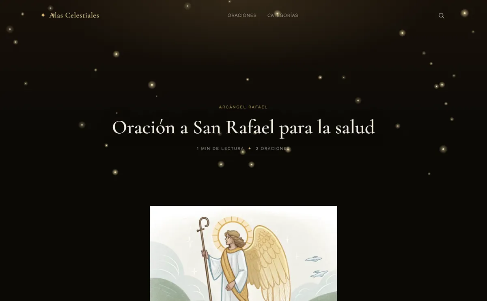
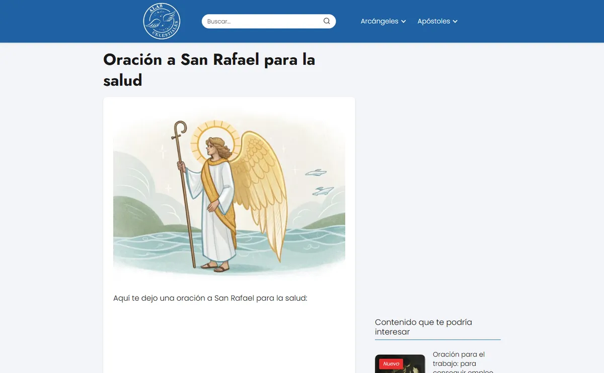
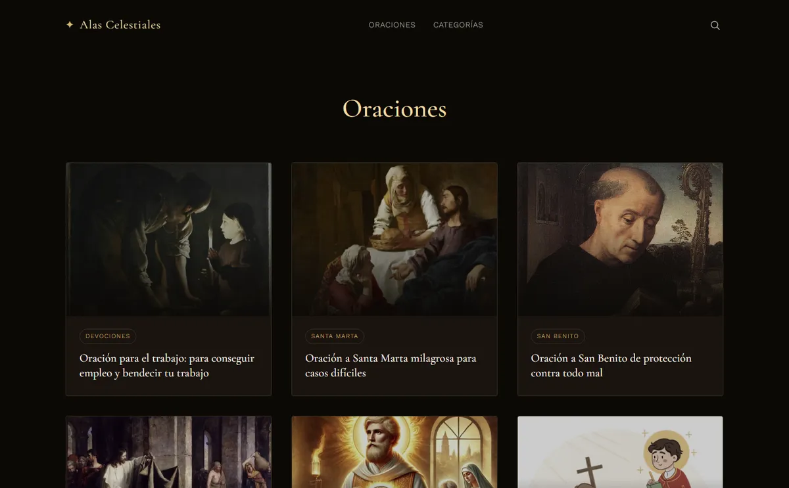
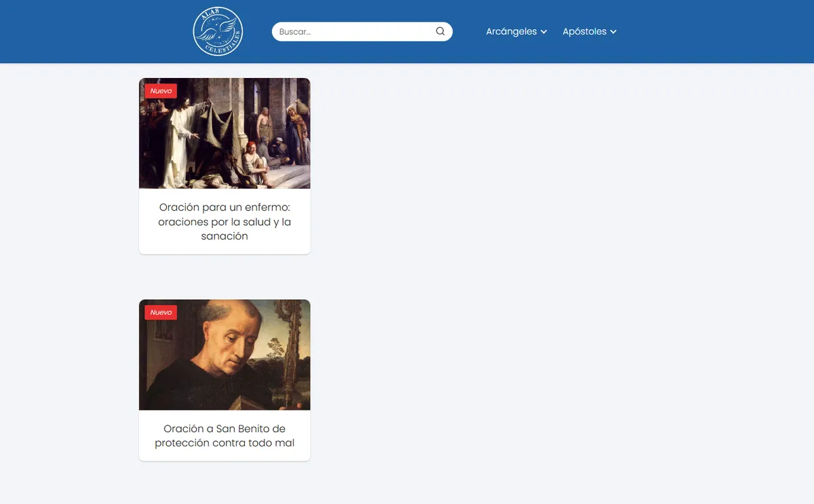
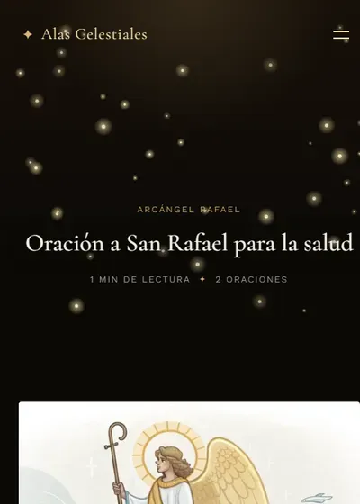
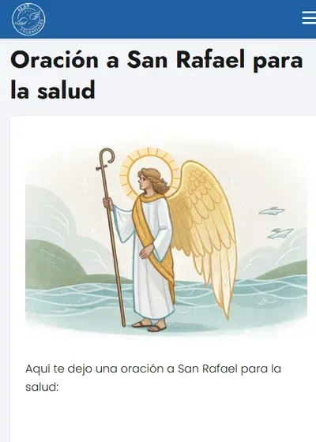

Recuperación + rediseño · WordPress
Alas Celestiales
Flagship · atmósfera
212oraciones con Copiar e Imprimir, en 117 publicaciones
Sitio de oraciones católicas. Pasó de una plantilla azul genérica a un tema propio, «cosmos sagrado», con partículas doradas y las oraciones como protagonistas.


Página de «Oración a San Rafael para la salud» · arrastrá para comparar


Listado «Oraciones» · arrastrá para comparar


La misma oración en pantalla de celular · arrastrá para comparar
Cómo empezó
- Plantilla prearmada azul, igual a la de cualquier otro sitio
- La oración quedaba mezclada con el texto, sin forma de copiarla ni imprimirla
- Cabecera con buscador y menú de categorías, sin identidad propia
Cómo quedó
- Tema propio «cosmos sagrado»: partículas doradas en canvas que se pausan fuera de pantalla y respetan «reducir movimiento»
- Bloques de oración automáticos con Copiar e Imprimir (212 oraciones en 64 posts)
- SEO propio sin plugin, buscador en vivo que funciona sin PHP y oración del día
WordPressPHPJavaScriptCanvasJSON-LD
Ver el sitio en vivo →